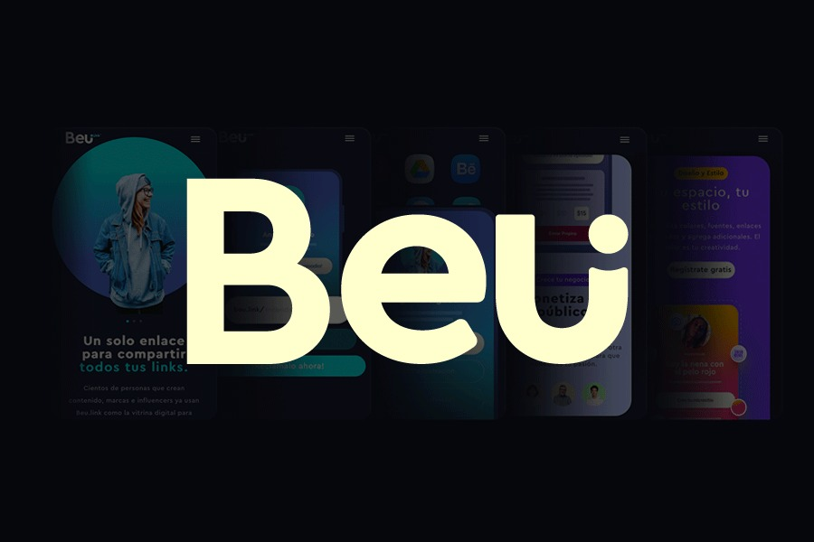
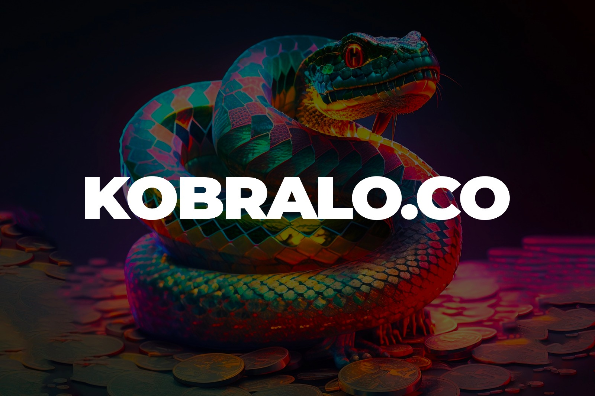
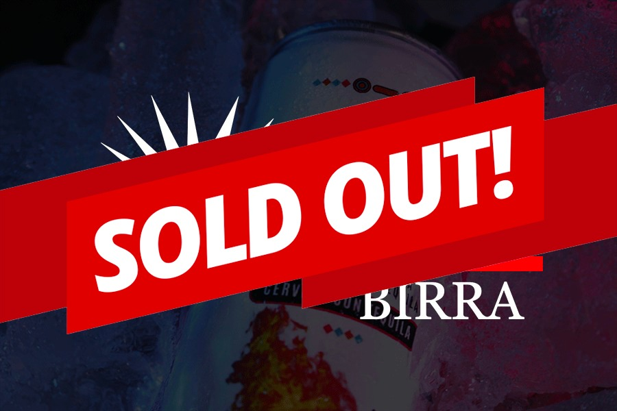
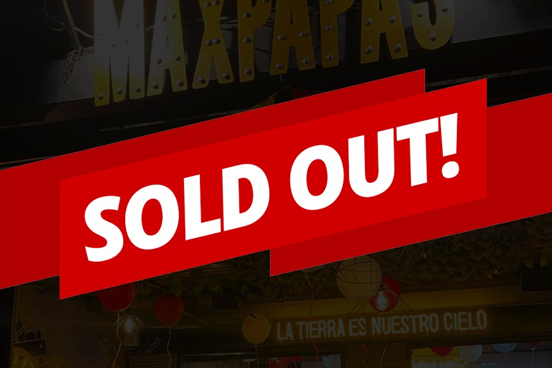
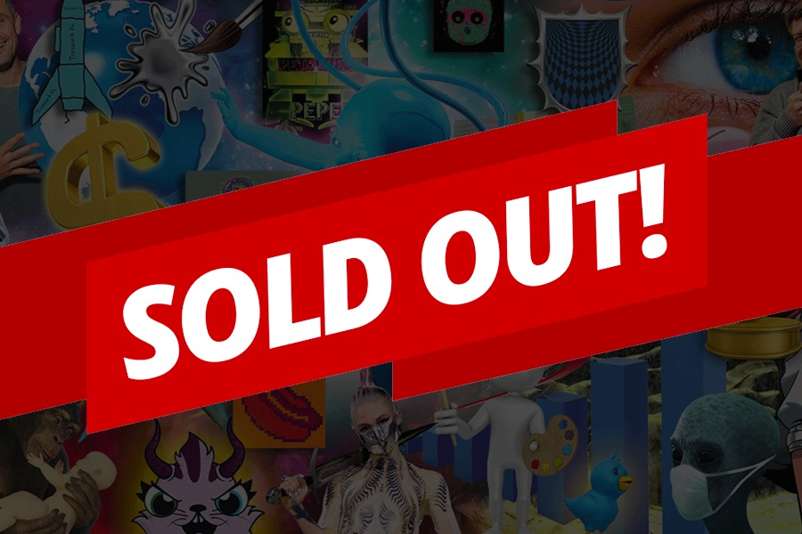

¡VUÉLVETE OTHERLANDER E INGRESA AL MUNDO DE LAS INVERSIONES!
Invierte desde 250 dólares en proyectos disruptivos y potenciales
0
Proyectos
0
Inversionistas
0
Mil USD recaudados
0
Empresas impactadas
OTHERLAND: UN MUNDO DIFERENTE
somos una plataforma en lÍnea que permite a los usuarios invertir en proyectos o negocios prometedores, por medio de un modelo de financiamiento colectivo o crowfunding. A través de Otherland, los inversores pueden evaluar, conocer y estudiar los diferentes proyectos activos y decidir en cúales desena invertir dependiendo de las características y rentabilidad de los mismos
PROYECTOS EN OTHERLAND, DONDE PUEDES INVERTIR
01/ 09
OTHERLAND
Es una plataforma de crowdfunding o financiamiento colectivo que permite a los emprendedores y empresarios obtener financiamiento para sus proyectos o empresas.
02/ 09
CANDY FLIP FESTIVAL
¡Prepárate para la revolución de los festivales de música electrónica en Latinoamérica! El Candy Flip Festival llega para sorprenderte con una combinación única de arte y tecnología que promete ofrecer una experiencia completamente nueva e inolvidable para los fanáticos de la música electrónica.
03/ 09
MÁS RÁPIDO MOTOS
¡Más Rápidos Motos es una empresa que se enorgullece de brindar oportunidades de crecimiento a sus inversionistas a través de un modelo de negocios bilateral. Los inversionistas son generadores de oportunidades y entienden que cada inversión es un paso hacia la expansión de su flota!

04/ 09
BEU
Es una plataforma revolucionaria que ha llegado para ofrecer una oportunidad única a los creadores de contenido de todo el mundo. Con su enfoque en la monetización de la creatividad, BEU está cambiando la forma en que los artistas y otros creadores de contenido pueden ganarse la vida haciendo lo que aman.
05/ 09
MIND
¡Si estás buscando un negocio innovador en el mundo de blockchain, MIND tiene tres formatos de franquicia para satisfacer las necesidades de tus clientes. Desde experiencias instantáneas hasta una experiencia completa!

06/ 09
KOBRALO
Kobralo es una plataforma de gestión de dinámicas para redes sociales que te permite simplificar y automatizar los procesos de creación y publicación de contenido en tus redes sociales...Proximamente ¡Gran lanzamiento!

07/ 09
QUETZAL
Quetzal, la reconocida empresa licorera de México, ha anunciado su entrada en el mundo de las inversiones con una emocionante oportunidad para toda su comunidad y fanáticos de las inversiones.

08/ 09
MAXPAPAS
Max Papas es un restaurante de comida rápida 100% colombiano que se especializa en la deliciosa y tradicional papas a la francesa (fritas).Desde el equipo de Otherland lideramos la campaña de validación del producto y la gestión para la apertura de sus dos puntos físicos: Centro Comercial Nuestro Bogotá y Calle 93.

09/ 09
NFT
Otherland transformó el universo de los NFT's en Colombia y abrió la posibilidad de conocer, aprender y formar una comunidad amante del arte digital con diferentes proyectos que obtuvieron magníficos resultados.
Los inversores puede invertir en una variedad de proyectos
SEGURIDAD
Cada negocio pasa por un riguroso proceso de evaluación. Foundders, una compañía especializada en finanzas, se encarga de revisar y aprobar si el proyecto es rentable y seguro para nuestra comunidad
ACCESIBILIDAD
Permitimos a los usuarios invertir en proyectos empresariales interesantes sin necesidad de una gran cantidad
TRASPARENCIA
Proporcionamos información detallada sobre los proyectos y permitimos a los inversionistas evaluar antes de invertir
POTENCIAL DE RETORNO DE INVESION
En cada proyecto evaluamos la cantidad de tiempo y la rentabiliad para indentificar el retorno de la inversión
SER PARTE DE UNA GRAN COMUNIDAD
Somos una gran comunidad de invesionistas y personas con interés en el crecimiento y los proyectos de impacto
INVIERTE EN LOS PROYECTOS CON MAYOR CRECIMIENTO DEL MERCADO
NOTICIAS DE INTERÉS PARA LOS OTHERLANDERS
Threads: La Nueva Red Social que abre batalla entre Musk y Zuckerberg
Bienvenidos al emocionante mundo de las redes sociales, donde la competencia y los comentarios polémicos nunca faltan. En este blog, exploraremos la última novedad: Threads, la nueva red social lanzada por la compañía de Zuckerberg que promete conquistar a los usuarios descontentos con la política de Twitter.
Ideas de Negocio Digitales 2023
¡Bienvenidos al apasionante mundo de las oportunidades digitales! En este blog, exploraremos emocionantes ideas de negocio para el año 2023 en el ámbito digital. Desde el marketing de influencers hasta el desarrollo de aplicaciones móviles y la consultoría en transformación digital,
Threads: La Nueva Sensación de Meta que Desafía a Twitter
¡Bienvenidos, curiosos Otherlanders, a un nuevo y emocionante capítulo en el mundo de las redes sociales! En este blog, nos adentraremos en los misterios de Threads, la plataforma de conversación basada en texto presentada por Mark Zuckerberg, el visionario CEO y cofundador de Meta.
El Futuro Laboral con IA: ¡Adiós Rutina!
¡Bienvenidos al fascinante mundo de la inteligencia artificial y su impacto en el panorama laboral! En los últimos años, hemos sido testigos de avances tecnológicos vertiginosos que han llevado a la IA a desempeñar un papel cada vez más prominente en nuestras vidas.
Vender con éxito: Conoce, Conviértete y Escucha
En este blog, descubrirás los secretos para convertirte en un maestro de la venta. Desde conocer a tus clientes hasta convertirte en un experto en tus productos y escuchar activamente, te brindaremos las herramientas necesarias para triunfar en el mundo de las ventas.
Navega hacia el éxito financiero con tu propio portafolio de inversiones
En este blog, nos adentraremos en el fascinante mundo de los portafolios de inversión. Acompáñanos en esta travesía llena de conocimiento, consejos y estrategias para construir un portafolio a medida que te permita alcanzar tus objetivos financieros.
Sherpa.ai: La revolución de la Inteligencia Artificial
Bienvenidos a nuestro blog sobre Sherpa.ai! Prepárate para sumergirte en el apasionante mundo de la Inteligencia Artificial de la mano de esta destacada compañía.
Conquistando el universo digital
¡Adéntrate en un viaje épico por el universo digital! En este blog, descubrirás los secretos para elegir las redes sociales adecuadas y conquistar el vasto mundo virtual. Desde los poderosos dioses de Facebook y el encanto seductor de Instagram, hasta la rapidez traviesa de TikTok y la sabiduría estratégica de LinkedIn
Fundamentos Financieros para Startups: El Camino al Éxito Empresarial
Bienvenidos, Otherlanders, a un fascinante viaje hacia los misterios y secretos que rodean a los fundamentos financieros para los fundadores de startups. En este blog, nos sumergiremos en un mundo mitológico y misterioso, donde los dioses de las finanzas y las deidades del éxito empresarial se entrelazan en una danza cósmica.
Boom financiero en Japón: la bolsa sorprende con un resurgimiento histórico
Bienvenidos al mundo financiero lleno de sorpresas y giros inesperados! En este emocionante blog, nos adentraremos en un fenómeno que ha dejado boquiabiertos a inversionistas y expertos: el inesperado boom en la bolsa japonesa.
¡Criptomonedas vs. Reguladores: El combate financiero!
¡Bienvenidos a nuestro blog donde presenciarán un enfrentamiento épico en el mundo financiero! En un rincón, tenemos a las criptomonedas, los activos digitales más revolucionarios de nuestra era. Y en el otro rincón, los reguladores estadounidenses, quienes han intensificado su vigilancia y están listos para imponer su autoridad.
Elon Musk y la revolución audiovisual en Twitter
¡Bienvenidos, una vez más Otherlanders ,a un blog donde el misterio y la diversión se dan la mano! En este rincón virtual, exploraremos el intrigante anuncio de Elon Musk sobre la creación de una aplicación de video en Twitter
El enigma económico: La caída del dólar en Colombia
Descubre cómo el apetito por activos latinoamericanos, el debilitamiento del Gobierno y las sorprendentes predicciones de los analistas tejen un misterio monetario. En este blog, exploraremos las luces y sombras de la cotización del dólar.
Deja que tu dinero baile con el crowdfunding inmobiliario
¡Bienvenidos a un viaje financiero lleno de diversión y oportunidades! En este blog, exploraremos el emocionante mundo del crowdfunding inmobiliario y cómo está revolucionando la forma en que invertimos.
Más Rápidos Motos: Oportunidades de Inversión Transparentes y Rentables
Descubre las oportunidades de inversión que ofrece Más Rápidos Motos, una empresa en crecimiento constante que se enorgullece de su modelo de negocio bilateral y transparente. Acompáñanos en este blog para conocer cómo puedes obtener un retorno atractivo invirtiendo en esta emocionante industria
PlatziSat-1: La emocionante aventura espacial de Platzi y Space X
Hoy, les traemos una noticia que despierta la curiosidad y el asombro: la plataforma latinoamericana de educación en línea, Platzi, se ha unido a la renombrada compañía Space X en una misión cósmica sin precedentes. Juntos, han lanzado un misterioso y fascinante satélite llamado PlatziSat-1 en la misión Transporter-8. ¿Qué secretos oculta este artefacto enigmático?
Startups Latam Week: ¡Bogotá se activa!
Bienvenidos, Otherlanders y entusiastas del mundo empresarial, les dejamos un blog lleno de emoción y oportunidades! Prepárense para sumergirse en la vibrante atmósfera de Bogotá, ya que se acerca el evento más esperado del año: ¡Startups Latam Week!
¿Eres creador de contenido y no sabes como empezar a monetizar?
¿Eres fan a las redes sociales? ¡Entonces prepárate para descubrir cómo convertir tus pasiones en una fuente de ingresos! En el mundo digital de TikTok, Instagram y Facebook, no solo puedes compartir fotos y videos graciosos, ¡también puedes generar dinero mientras lo haces!
Crowdfunding 2.0: El futuro es ahora
Bienvenidos al blog "Crowdfunding 2.0: El futuro es ahora". En este espacio emocionante, exploraremos cómo las nuevas tecnologías como la realidad virtual, la inteligencia artificial y el blockchain están revolucionando la forma en que financiamos proyectos a través del crowdfunding.
La IA de Amazon: ¡Adiós a los productos dañados!
Bienvenidos a un nuevo artículo lleno de tecnología y diversión! En el vertiginoso mundo del comercio electrónico, la inteligencia artificial está dejando su huella, y Amazon no se queda atrás. En esta ocasión, nos sumergimos en la fascinante historia de cómo Amazon ha implementado una innovadora solución tecnológica para inspeccionar sus productos y evitar que lleguen dañados a nuestros hogares
Ganar dinero en Internet: ¡Marketing, Adsense y Cursos
¿Quieres saber cómo ganar dinero en Internet? Déjame decirte desde el principio: no es fácil ni rápido. Pero, si estás dispuesto a dedicar tiempo y esfuerzo, existen formas efectivas para lograrlo. En este blog, te revelaré las mejores estrategias.
ChatGPT: El impulso de la Inteligencia Artificial generativa
ChatGPT, el chatbot impulsado por inteligencia artificial, ha tomado al mundo por sorpresa desde su lanzamiento. Con millones de usuarios activos en apenas dos meses, esta innovadora aplicación ha generado debates y especulaciones sobre el impacto de la inteligencia artificial generativa en nuestro futuro cercano.
Otherland: Arte, tecnología y cripto en el financiamiento colectivo del futuro
Bienvenidos al apasionante mundo de Otherland! En este blog, exploraremos la increíble fusión entre el arte, la tecnología y las criptomonedas en el contexto del financiamiento colectivo. Otherland se destaca por su enfoque innovador y su compromiso con un futuro sostenible.
SAFE: El pacto misterioso de las startups
¡Bienvenidos al apasionante mundo de las startups y los Acuerdos Simplificados sobre Acciones Futuras, conocidos como SAFE! En este blog, exploraremos el enigmático vínculo entre inversionistas y emprendedores, y desvelaremos los secretos que se esconden tras este intrigante pacto
Las 5 Jugadas de Elon Musk: Deléitate con sus Inversiones Increíbles
¡Otherlanders, amantes de la tecnología y las asombrosas inversiones! Hoy nos adentraremos en el fascinante mundo de Elon Musk, el genio multimillonario sudafricano que ha revolucionado la industria tecnológica. Prepárense para un viaje lleno de adrenalina, donde tendremos las cinco inversiones más importantes que llevaron a Musk a convertirse en uno de los hombres más ricos del planeta.
Ventajas de las Startups: El camino hacía el éxito
Este blog está dedicado a todos los Otherlanders y soñadores del nuevo mundo que desean sumergirse en el emocionante universo de las startups. Aquí exploraremos las increíbles ventajas que estas pequeñas empresas ofrecen y cómo pueden transformar tu vida de manera asombrosa.
Ahorra y diviértete: 10 consejos geniales
Prepárate para ser un experto en el arte del ahorro. En este blog, descubrirás 10 consejos geniales para ahorrar dinero en tu día a día sin renunciar a la diversión. Desde presupuestos mágicos hasta trucos para encontrar grandes posibilidades, te mostraré cómo mantener tu cuenta bancaria en forma sin perder tu estilo de vida. ¡Es hora de dominar el ahorro y convertirte en el héroe de tus finanzas!
La emoción travesía de las startups: de la nada al éxito
Las startups representan una emocionante y vibrante parte del panorama empresarial actual. Su capacidad para crecer rápidamente, su enfoque en la innovación y su búsqueda de financiación externa han captado la atención de inversores y emprendedores en todo el mundo.
Descubre Candy Flip Festival: Un encuentro épico de arte y tecnología
Candy Flip Festival ha llegado para cautivar tus sentidos con su incomparable combinación de arte y tecnología. Los creadores de este evento, con años de experiencia en la industria, han decidido dar un salto y crear algo verdaderamente innovador. Ahora, tú también puedes formar parte de esta increíble aventura
El principio de Beu: La Startup para creadores de contenido
Ha llegado una plataforma que está revolucionando la forma en que los creadores de contenido latino expresan su talento y pasión. Beu, en tan solo unas semanas, ha logrado reunir más de 20,000 usuarios registrados, y su impacto solo está comenzando. ¿Estás listo para descubrir cómo Beu está cambiando las reglas del juego en la industria de los creadores de contenido?
El Génesis de las Startups: La Historia de Silicon Valley
Hace más de medio siglo, en un rincón al sur de San Francisco, California, se produjo un evento que cambiaría el curso de la historia. En 1955, el genial físico William Shockley abandonó los "Laboratorios Bell" y decidió aventurarse en su propio proyecto.
Criptomonedas en Colombia: La revolución digital del dinero
En los últimos años, Colombia ha sido testigo de un crecimiento significativo en la implementación y el uso de criptomonedas. Estos activos digitales de alta volatilidad se han vuelto cada vez más atractivos para muchas personas en el país, generando avances tecnológicos y cambios en la forma de invertir dinero.
Guía básica de inversiones: Descubre tus opciones y toma decisiones financieras informadas
Las inversiones son una herramienta importante para hacer crecer nuestro dinero a largo plazo. A medida que adquirimos conocimientos sobre las inversiones, se hace más fácil tomar decisiones informadas y lograr nuestros objetivos financieros.
¡BEU: La plataforma que permite monetizar tu creatividad!
¿Alguna vez has soñado con ganar dinero haciendo lo que más amas? ¿Quieres compartir tus talentos con el mundo y ser reconocido por ello? ¡Pues prepárate para descubrir Beu, la plataforma que hará realidad tus sueños más brillantes! Con Beu, podrás crear tu propio espacio digital, conectar con tu audiencia y monetizar tu contenido de una manera sencilla y divertida.
El tiburón de Wall Street: Carl Icahn bajo investigación
El "tiburón de Wall Street", Carl Icahn, se enfrenta a una investigación federal después de que un fondo bajista denunciara supuestas irregularidades en sus actividades financieras.La firma de Icahn, Icahn Enterprises, sufrió una caída en picado en la bolsa de valores después de la publicación del informe de Hindenburg Research.
¿Te afectan las emociones al invertir? Aprende a controlarlas y mantener tus inversiones a salvo
La inversión en la bolsa puede ser emocionante y a la vez intimidante. Todos hemos escuchado historias de personas que han hecho fortunas en el mercado de valores, pero también hay historias de personas que han perdido todo lo que tenían. En un mundo cada vez más incierto, es comprensible que nuestras emociones puedan influir en nuestras decisiones de inversión.
El papel del oro en la búsqueda de independencia financiera
En los últimos años, se ha producido un cambio en el equilibrio global de poder económico y financiero que ha llevado a muchos países a buscar alternativas al dólar estadounidense. En este contexto, la compra de oro por parte de los bancos centrales se ha convertido en una tendencia cada vez más evidente.
La aceleradora Ycombinator apuesta por la Inteligencia Artificial generativa y aumenta sus Stratups
¿Quieres saber qué está revolucionando el mundo de la tecnología en este momento? ¡La IA generativa! Y la famosa aceleradora de start-ups, YCombinator, está liderando el camino. En solo seis meses, YC ha acelerado a 59 nuevas empresas de IA generativa, demostrando el enorme potencial de esta tecnología y las oportunidades que brinda a las empresas emergentes.
En dos años, aceleradoras de "Startups" casi se han duplicado
¿Estás buscando un lugar para desarrollar tu próxima gran idea de negocio? Si es así, presta atención a Colombia, un país que se está convirtiendo en un destino cada vez más atractivo para los emprendedores que buscan nuevas oportunidades y desafíos.
Aceleradora de J.P Morgan seleccionó startup colombiana
En un mundo donde las pequeñas y medianas empresas son la base del tejido empresarial y económico de muchos países, los desafíos que enfrentan día a día son innumerables. Es por eso que un grupo de jóvenes antioqueños decidió unir fuerzas y crear Kuadra, una plataforma todo-en-uno que promete hacer la vida más fácil a los comerciantes y emprendedores de Colombia
El dolar blue dispara la preocupación en Argentina
En los últimos días, el dólar blue o dólar negro ha causado gran preocupación en Argentina debido a su incremento meteorológico en la cotización. Esta práctica clandestina, utilizada por muchos ciudadanos como una forma de resguardar sus ahorros ante la inflación, se ha convertido en una de las principales referencias económicas del país
Cinco libros que todo inversor debe conocer para progresar en el mercado
The Economist, una de las publicaciones líderes en el mundo de las finanzas, ha recomendado cinco libros esenciales para aquellos que desean incursionar en el mundo de la inversión y asegurar su éxito financiero a largo plazo.
Colombia se tiñe de rojo
Ha sido un mes difícil para el mercado de valores colombiano, ya que las acciones han caído significativamente, llevando a la Bolsa de Valores del país a una situación financiera precaria. La mayoría de las empresas que cotizan en la bolsa han sufrido pérdidas, con solo cuatro logrando operar en terreno positivo.
Los fondos internacionales que más invierten
Ocho fondos de inversión estadounidenses lideran el ranking de los 15 fondos internacionales más grandes que han invertido en emprendimientos en Bogotá, según un informe de Invest in Bogotá, lo que demuestra el interés de los inversores en el potencial de crecimiento de la economía colombiana.
Amazon alcanzó los US$127 millones en el primer trimestres del año
Amazon, el gigante del comercio electrónico, ha anunciado que ha alcanzado un ingreso de US$127.300 millones en el primer trimestre del año, lo que representa un aumento del 9% en comparación con el mismo período del año anterior.